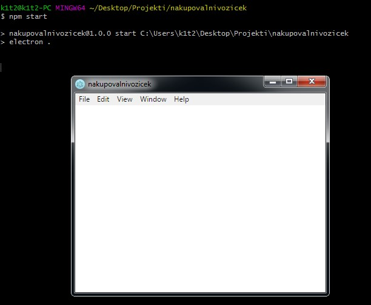

2. del - Vodič
Delo z okoljem Electron
Ta del vodiča pričakuje, da imate že postavljeno okolje electron. Če nimate pojdite sem.
Prvo bomo v mapi "nakupovalnivozicek" ustvarili novo datoteko ".js" z imenom "main".
Zdaj bomo v ustvarjeno datoteko na začetku definirali tri spremenljivke oz. glavne module, ki so potrebni za delovanje programa.
$ const electron = require('electron');
$ const url = require('url');
$ const path = require('path');
Nato bomo vzeli nekaj stvari oz. objektov z electron-a.
To storimo z naslednjo vrstico. V njej imamo objekt "app" in objekt "BrowserWindow", ki jih vzamemo iz electron-a, ki je definiran na vrhu datoteke.
$ const {app, BrowserWindow} = electron;
Za konec definicij pa imamo še spremenljivko, ki bo upravljala z glavnim oknom.
$ let mainWindow;
V okolju electron moramo poslušati da bo aplikacija pripravljena. To naredimo z naslednjo vrstico kode:
$ app.on('ready'), function(){
$
$ });
Zdaj bomo znotraj te funkcije ustvarili osnovo glavnega okna.
# Ustvarimo novo okno
$ mainWindow = new BrowserWindow({});
# Naložimo html v okno
$ mainWindow.loadURL(url.format({
$ pathname: path.join(__dirname, 'glavnoOkno.html'),
$ protocol:'file:',
$ slashes: true
Zdaj lahko zaženemo electron aplikacijo z izvajanjem naslednje komande:
$ npm start
Izgledati bi moralo približno tako.
